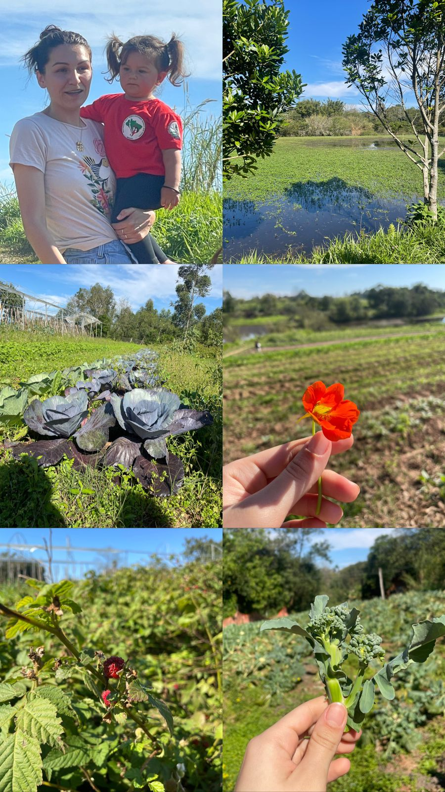

24 de maio de 2023
24 de maio de 2023
AULA 2: SAN, Soberania e Direito Humano a Alimentação Adequada
Nesta aula aprendemos mais sobre os conceitos básicos de Segurança
Alimentar e Nutricional. Estes são três conceitos fundamentais
INTERDEPENDENTES: Direito Humano à Alimentação Adequada, Segurança
Alimentar e Nutricional e Soberania Alimentar.
Achei muito interessante a evolução do conceito de SAN com o passar dos anos,
a inclusão de sustentabilidade e diversidade cultural como fatores centrais,
deixando claro que uma alimentação saudável vai além de alimentos em
quantidade e qualidade suficiente. Abaixo trouxe alguns eixos de SAN que
achei válido pontuar:
Produção sustentável> Conservação dos recursos naturais> Sociobiodiversidade>
Aproximação produtor-consumidor> Alimentação Adequada e Saudável> Políticas
públicas.
Acredito que o Brasil caminha, junto as iniciativas de SAN, rumo a equidade
alimentar, porém a passos lentos. Me entristece ver que, em um país com tanta
biodiversidade e disponibilidade de alimentos, ainda temos pessoas passando
fome, e mesmo com esforços populacionais e também pelo governo, muitas metas
não são atingidas. Acredito que as políticas públicas precisam dialogar melhor
com o público-alvo e que pequenas atitudes fazem a diferença pra quem está em
situação de vulnerabilidade alimentar (doações, etc..).
O Direito Humano a Alimentação Adequada (DHAA), que está presente tanto na
Declaração Universal dos Direitos Humanos quanto na Constituição Federal, é uma
enorme conquista que, a meu ver, coloca a SAN em voga populacional e nas pautas
políticas. O direito de estar livre da fome: esta dimensão se refere ao
provimento, e demanda implementação imediata. O fato é que hoje no Brasil, com
o crescimento do trabalho informal e os altos índices de desemprego, além do
exorbitante aumento nos valores dos alimentos da cesta básica, esse direito não
está em pleno exercício por grande parte da população. Isso ficou muito mais
evidente com o advento da Pandemia do COVID-19, onde pessoas que dependiam de
“bicos” para se alimentar se viram sem sua fonte de sustento e diante de
alimentos básicos com o valor altíssimo. No nosso país a população pobre tem
que se desdobrar pra conseguir alimento, tanto o acesso físico quanto o
econômico são muito defasados para essas pessoas, tendo seus direitos não
atendidos. Urge ações governamentais e de solidariedade para reverter e
mitigar essa problemática persistente no Brasil e honrar com o DHAA presente
na constituição.
Já a Soberania Alimentar foi um conceito inicialmente de difícil compreensão
pra mim, tive que estudar e procurar me aprofundar pra entender sua relevância.
A soberania alimentar é o direito dos povos de definir suas próprias políticas
agrícolas e alimentares, levando em consideração suas necessidades,
prioridades e culturas locais. Ela envolve a capacidade de produzir alimentos
de forma sustentável, preservando a diversidade agrícola e cultural, e
garantindo o acesso a alimentos saudáveis e culturalmente adequados. A
importância da soberania alimentar é que ela promove a segurança alimentar
e nutricional, fortalece as comunidades locais e contribui para a redução
da pobreza. Ao permitir que as pessoas tenham controle sobre a produção e
o consumo de alimentos, a soberania alimentar também promove a autonomia
e a dignidade dos agricultores e consumidores. Além disso, a soberania
alimentar enfatiza a sustentabilidade ambiental, incentivando práticas
agrícolas que preservam os recursos naturais e reduzem os impactos
negativos no meio ambiente. Ela promove a agricultura familiar e a
produção local, contribuindo para a resiliência dos sistemas alimentares
diante de desafios como mudanças climáticas, crises globais e grandes
agricultores.
A reportagem que trouxe abaixo é uma entrevista feita no Dia Mundial da
Segurança Alimentar com a vice-presidente do Consea- RS e fala sobre a situação
atual no país e no estado, abordando os conceitos destacados anteriormente:
Aumento da fome: “A insegurança alimentar é resultado de ações políticas”,
diz vice do Consea.
Além disso, trouxe um vídeo que ilustra e explica de maneira didática a situação
da fome no Brasil e a importância do conceito de soberania alimentar:
 31 de maio de 2023
31 de maio de 2023
AULA 3: Bases legais que sustentam a SAN no Brasil
Neste dia, foi pedido para nós fizéssemos uma leitura prévia para
participação da aula. O livro “A Contribuição Brasileira à Segurança
Alimentar e Nutricional sustentável”, feito em parceria com a Editora
UFRGS, inclui quatro capítulos que buscam situar a abordagem
brasileira frente ao debate internacional de construção de sistemas
alimentares saudáveis e sustentáveis. Iniciam o livro apresentando
a política de segurança alimentar e nutricional do país e seguem
falando sobre os canais através dos quais os sistemas alimentares
afetam negativamente a saúde, discutem as contribuições de guias
alimentares para uma alimentação saudável e sustentável e
apresentam o papel das compras públicas na construção de sistemas
alimentares sustentáveis. A segunda parte do livro caracteriza o
modelo de segurança alimentar e nutricional adotado no Brasil em
sua diversidade de olhares e atores, oferecem uma metodologia
de análise e mapeamento dos desertos alimentares no país, fazem
um resgate da atuação primordial da sociedade civil na defesa
da segurança alimentar e nutricional, analisam a atuação das
universidades na implementação das políticas públicas de SAN
e contribuem com um panorama das pesquisas no país que
enfocam a Soberania e Segurança Alimentar. Na terceira
parte, apresentam os desafios e potencialidades da
sociobiodiversidade no contexto da alimentação escolar,
discutem o papel dos mercados domésticos no acesso a
alimentos de qualidade, a relevância da manutenção das
sementes crioulas e da promoção da agroecologia no âmbito
da SAN, tomam a cadeia da polpa de butiá como referência
para refletir sobre a influências das cadeias alimentares
e apresentam, através da Polifeira do agricultor, um
exemplo de como as feiras podem contribuir para a promoção
da SAN. A última parte apresenta dois relatos: o trabalho
desenvolvido na Univali integrando gestão de resíduos,
hortas e jardins comestíveis e a experiência do projeto
“Bota na mesa” em articular agricultores familiares
para o abastecimento de grandes centros urbanos.
Infelizmente não consegui concluir toda a leitura a tempo da aula,
porém me despertou muita curiosidade e me somou conhecimentos na área.
No contexto do Brasil, um país rico em recursos naturais e com uma
grande produção agropecuária, a contribuição para a Segurança
Alimentar e Nutricional sustentável pode abranger várias iniciativas,
dentre as muitas destacadas na leitura. A agricultura sustentável,
que visa promover a adoção de práticas agrícolas que preservem o
solo, a água e a biodiversidade, como a agroecologia, o plantio
direto, a integração lavoura-pecuária-floresta (ILPF) e o uso
responsável de insumos agrícolas. O investimento em políticas
públicas que fortaleçam a produção da agricultura familiar,
garantindo renda para os produtores rurais e acesso a alimentos
saudáveis para as comunidades locais. Estimular a produção e o
consumo de alimentos variados, incluindo alimentos tradicionais e
regionais, contribuindo para a segurança nutricional e a
valorização da cultura local. Implementar medidas para reduzir
as perdas ao longo da cadeia de produção, distribuição e
consumo de alimentos, evitando que quantidades significativas
de recursos naturais sejam desperdiçadas. Investir em pesquisa
agrícola e tecnológica para o desenvolvimento de práticas e
tecnologias que melhorem a produção, a eficiência e a
sustentabilidade do sistema alimentar. Desenvolver e
implementar políticas eficazes que promovam a Segurança
Alimentar e Nutricional sustentável não é uma tarefa fácil,
envolve governos, sociedade civil, setor privado e
organizações não governamentais, mas juntos alcançamos
resultados significativos.
Durante a aula, antes da exposição das professoras, assistimos a
primeira parte do documentário “Peraí, é nosso direito!”. A
história relata a busca dos direitos por alimentação adequada
de duas comunidades muito pobres, Sururu de Capote em Maceió (AL)
e Vila Santo Afonso em Teresina (PI). O objetivo foi contribuir
com o apoderamento das comunidades e apoiar ações para exigir e
monitorar a realização de seus Direitos Humanos, em especial o
Direito Humano à Alimentação Adequada – DHAA. Este documentário,
que fiz questão de terminar de assistir após a aula, é recheado
de depoimentos que expressam a emoção, a indignação e a força
de pessoas que vivem marginalizadas e submetidas à violação dos
seus direitos. Além disso, o vídeo também conta com a
participação de especialistas e militantes de direitos humanos
que debatem conceitos e a realidade da luta para que sejam
garantidos e efetivados os direitos humanos no Brasil.
Na minha opinião, foi uma aula de muitas reflexões, sai de lá
relativamente abalada por esse contato doloroso de realidades tão
injustas e ao mesmo tempo tão próximas. Como exposto pelas
professoras nesse dia, “Qualquer tipo de RESTRIÇÃO OU VIOLAÇÃO
pode ter um efeito jurídico. É muito importante que todas as pessoas
tenham conhecimento sobre esses direitos, pois, como sabemos, o
primeiro passo para se exigir um direito humano é conhecê-lo e
saber quem tem direito a ele.”. Refleti muito sobre essa frase e
entendi que, apesar de a lei, na teoria, amparar a todos os seus
direitos, sabemos que, na prática, as coisas são diferentes,
ainda mais quando estamos falando de populações periféricas. As
pessoas de baixa escolaridade e que vem de famílias
marginalizadas, estão fadadas a viver em condições sub-humanas
e sem seus direitos atendidos, implorando por ajuda do
Estado, sem serem ouvidas. Precisamos de governantes
comprometidos em mudar a realidade dessas pessoas, em dar
voz as suas dores e conceder-lhes o que é de direito, uma
casa quente, um trabalho digno e um prato de comida na mesa.
Procurei reportagens recentes para saber como estão as
comunidades protagonistas do documentário e fiquei feliz
em saber que, ao que tudo indica, o prefeito está tratando
para que eles sejam realocados para locais com melhores
condições, porém ainda receosa por não saber até que ponto
isso é verdade ou apenas uma jogada de marketing que fala
mais sobre interesses políticos do que sobre o bem-estar
dessa comunidade. Abaixo anexo a reportagem falando a
respeito.
Comitê deve acompanhar mudanças de famílias da comunidade Sururu de
Capote.
07 de junho de 2023
AULA 4: Atividade com CONSEA RS
Neste dia tivemos uma aula com a Nutricionista do CONSEA RS,
Luanda Conrado. Eu estava bem animada com a oportunidade de um
contato mais próximo com alguém de dentro de um órgão que tanto
ouvi falar no curso de Governança em Segurança Alimentar e
Nutricional e ouvir o que acontece lá na realidade e o papel da
nutricionista, pois para mim essa relação era muito distante,
utópica e pouco prática. De início, Luanda nos contou sobre a
Pesquisa de Orçamentos Familiares para diagnóstico de grau de
INSAN que aquelas pessoas se encontram. Me dói muito saber que
mais de 30% da população brasileira passa fome ou tem incerteza
quanto ao acesso de alimentos. Vivemos em um país que o problema
da fome está pautado não na disponibilidade, mas sim no acesso,
visto que parte da sua população não tem renda para consumir esses
alimentos. Como a palestrante bem destacou, o desemprego, a
inflação no preço dos alimentos da cesta básica e a queda no
poder aquisitivo, que foram potencializados com o advento da
pandemia do COVID-19, são as principais causas para essa
parcela tão significativa da população estar em algum nível
de Insegurança Alimentar e Nutricional. O desmonte das políticas
voltadas para a proteção e a promoção de SAN pelo governo passado,
também tem grande responsabilidade pela volta do Brasil ao Mapa
da Fome e reflete o descaso e profunda desigualdade do Estado
para com essa população que tem seu DHAA negligenciado. Me
admira e atrai ver que uma enorme parcela das conquistas
referentes a SAN é responsabilidade da mobilização popular e
de atores da sociedade civil com poder de voz no CONSEA,
gostaria muito de poder fazer parte desse movimento que faz a
diferença na vida de muitas pessoas. Luanda compartilhou conosco
como foi que ela despertou interesse por essa área da nutrição
e acredito que só quando nós temos contato próximo com a
fome, que conseguimos ilustrá-la com rostos e histórias,
que nossa vontade de fazer a diferença vai além da empatia
e solidariedade e parte para ação. Durante a palestra,
foram mostradas diversas ações populares de combate a INSAN,
como o Banquetaço, Quem tem fome tem pressa e as cozinhas e
hortas solidárias. Uma frase dita em aula ficou ressoando
na minha cabeça: “Quem tem fome e não come, some”.
Inconformada com isso e sabendo de toda situação da fome
no Brasil e também em Porto Alegre, resolvi ir atrás e
saber mais sobre como poderia contribuir com as cozinhas
comunitárias, que dão de comer a centenas de pessoas
famintas todos os dias. Através do site Cozinha
Solidária do 0MTST consegui contribuir com 15 reais,
o que garante que duas pessoas terão o que comer
neste mês. Lá eles têm diversas opções de planos, que
cabem em todos os bolsos, para ajudar a comunidade.
Estou buscando me informar a respeito do trabalho
voluntário pois tenho certeza de que seria muito
gratificante poder fazer a diferença.

 14 de junho de 2023
14 de junho de 2023
AULA 5: (IN)SAN no Brasil
Neste dia, antes da aula, fizemos um estudo dirigido que consistia
em assistir o documentário “Josué de Castro- Cidadão do Mundo,
1994” de responder algumas perguntas. O filme é uma cinebiografia
que homenageia a vida e a obra do médico, filósofo, sociólogo e
geógrafo pernambucano que dedicou sua vida ao estudo e combate à
fome. O documentário retrata como Josué de Castro identificou as
causas e consequências da fome, que afetava mais de um bilhão de
pessoas em todo o mundo na época, especialmente aqueles que
viviam abaixo da linha da pobreza. Ele buscou alternativas para
mudar esse cenário e foi autor de vários livros que abordavam
a fome como uma questão política.
Algo que me tocou muito foi que, apesar de seus esforços e
contribuições significativas, Josué de Castro acabou sendo exilado
pela ditadura militar. Ele retratou a miséria e as desigualdades,
mas nunca perdeu a esperança e continuou a propor soluções, se
tornando uma eterna referência. Josué acreditava que a humanidade
tinha recursos naturais, técnicos e financeiros suficientes para
resolver o problema da fome. Mesmo que hoje saibamos que ele
estava certo e que com a atual tecnologia temos condições para
pôr comida no prato de todos, tal problemática persiste permeada
pelos interesses financeiros da classe dominante e falta de
empatia com o próximo. Apesar de ser uma personalidade marcante
e de extrema relevância para as conquistas de Segurança
Alimentar e Nutricional no país, após assistir o documentário,
fiquei triste por saber que muitos desconhecem as batalhas
desse ser icônico. Ele está eternizado em suas obras e segue
inspirando quem se identifica com sua causa, foi muito
interessante conhecer mais sobre essa personalidade.
Além disso, uma das perguntas nos estimulava a procurar mais a
respeito de ações (políticas) que ocorrem no Brasil para combate
à INSAN. Muitas delas eu já havia tido contato no curso que fiz
durante as férias, mas foi importante revê-las e entender um
pouco mais a respeito de cada uma delas. Tanto o Programa Bolsa
Família, transferência de renda que visa combater a pobreza e
a fome e beneficia famílias em situação de vulnerabilidade,
quanto o Programa de Aquisição de Alimentos (PAA), que tem
como objetivo incentivar a agricultura familiar e promover a
compra direta de produtos para abastecer entidades
socioassistenciais, hospitais, escolas e outros órgãos
governamentais, me chamaram muita atenção e creio que devem
ser ainda mais difundidos para um combate efetivo da INSAN.
Durante a exposição em aula deste dia, abordamos a temática
“ALIMENTAÇÃO (E SUA AUSÊNCIA/FOME) NO SÉCULO XXI/PANDEMIA”. Foi
a primeira vez que me deparei com o conceito de “Sindemia Global”:
aponta que as três pandemias, OBESIDADE, DESNUTRIÇÃO E MUDANÇAS
CLIMÁTICAS, interagem umas com as outras, compartilham
determinantes. Esses determinantes nada mais são do que os,
já destacados aqui por mim, interesses da classe dominante,
produção insustentável de alimentos e a falta de políticas
públicas eficazes. Todas essas têm seus desdobramentos, como
o ultraprocessados dos alimentos e escasso acesso a comidas
saudáveis, que potencializam a INSAN. Acredito que um dos
pontos abordados pelas professoras, de que a fome não está
apenas em corpos esqueléticos e que pessoas com IMC normal
ou até mesmo acima do peso podem estar em algum grau de
INSAN, foi importante pra quebra de pré conceitos
estabelecidos pela sociedade e conscientização de nós,
alunos e futuros nutricionistas. Sou grata por poder
ter acesso a esse conteúdo que é tão relevante para um
atendimento adequado e entendimento da realidade da nossa
população.
Abaixo, trouxe alguns vídeos para contribuir com a reflexão das
diferentes formas de desnutrição.
 21 de junho de 2023
21 de junho de 2023
AULA 6: Organização dos seminários
Nesse dia a turma foi dividida em 6 grupos, de 5 a 6 pessoas,
para produção de um seminário sobre diversos eixos do sistema
alimentar que estão ligados a Insegurança Alimentar e
Nutricional. Meu grupo é o 2, então seremos o segundo a apresentar
, e isso é uma grande responsabilidade já que os trabalhos a
seguir serão nivelados pelos primeiros. Confesso que fiquei
feliz com o tema que nos foi proposto: Produção de alimentos
e suas insustentabilidades. Gosto muito de estudar e debater
sobre esse aspecto ligado aos sistemas de produção, como
já deixei explicito anteriormente com os vídeos que trouxe
como reflexão.
Os meios de produção têm vários impactos na sociedade, na economia
e no meio ambiente. Falar sobre o Impacto social está diretamente
ligado as condições de trabalho e a distribuição de renda,
consequentemente influenciando a desigualdade social e a INSAN.
O Impacto econômico está no fato dos meios de produção determinarem
os custos, a oferta e a disponibilidade. Se fala muito sobre
crescimento econômico do Brasil ligando-o as exportações, mas a
que custo? Os alimentos básicos vêm ficando mais caros e cada
vez menos presentes no prato das famílias periféricas, que acabam
por preferir os ultraprocessados que são mais baratos e dão
maior aporte energético. Além disso, os modelos de produção
insustentáveis causam grande impacto ambiental, utilizando grandes
quantidades de recursos naturais, a emitindo de poluentes,
gerando resíduos e levando o solo ao esgotamento, pensando
apenas no lucro sem se preocupar com o futuro da humanidade.
Essa série de irresponsabilidades pode acarretar a alteração
das práticas, valores culturais e os hábitos de consumo. Todas
essas temáticas me revoltam e deixam claro o descaso do governo,
visto que muitas dessas práticas poderiam ser limitadas com
intervenção estatal e promover a SAN e o DHAA para mais pessoas.
Vai ser muito interessante me aprofundar nessas pautas.
28 de junho de 2023
AULA 7: Atividade autônoma, construção dos seminários
Nessa semana me reuni com o meu grupo para que dividíssemos os assuntos
da temática que teríamos que abordar, Produção de alimentos e suas
insustentabilidades, já que tem muito a ser falado. Inicialmente,
decidimos englobar dois setores gerais: produção agrícola e produção
industrial. Decidi ficar com produção agrícola pois gosto de entender
mais sobre essa parte, que diz muito a respeito da disponibilidade,
acesso, custo, impactos ambientais e, consequentemente, sociais.
Dentro da produção agrícola dividimos em três áreas:
insustentabilidades gerais, monocultura e perda da biodiversidade
e, por último, mas não menos importante, o uso de agrotóxicos. Eu
fiquei responsável por falar da monocultura e seus impactos, o que
é uma grande responsabilidade visto que o Brasil implementa esse
modelo de cultivo desde sua colonização.
Pesquisar sobre a monocultura é uma tarefa extensa, visto a imensa
quantidade de artigos publicados a respeito dela e seus impactos.
Além disso, temos um tempo curto para falarmos de muitas informações,
então tenho que condensar apenas os principais pontos indispensáveis.
Durante a minha pesquisa encontrei diversos artigos falando sobre
como as mudanças climáticas afetam a produtividade das monoculturas,
tendo em vista a biodiversidade como ferramenta de proteção de
espécies individuais das condições de seca. Sempre soube dos diversos
impactos desse modelo de cultivo pois minha escola nos incentivou a
procurar a respeito, mas lendo os artigos fiquei realmente chocada
sobre os impactos fisioquímicos e sociais.
05 de julho de 2023
AULA 8: Apresentação do grupo 1 e 2
Neste dia, começamos as apresentações. Inicialmente, o Grupo 1 introduziu falando um pouco a respeito dos sistemas alimentares insustentáveis, que seriam trabalhados mais a fundo pelos demais colegas em suas apresentações. Após, foi a vez do meu grupo, que falou sobre a produção de alimentos e suas insustentabilidades. Nossa pesquisa relacionou as insustentabilidades da produção agrícola e industrial e seus impactos socioambientais. O agronegócio causa uma série de impactos preocupantes, incluindo: mudanças no balanço hídrico, mudanças no hábito da fauna, risco a saúde dos trabalhadores, concentração fundiária e privatização ilegal de terras, exportação de água e custo ecológico, uso de agrotóxicos e insumos agroquímicos, dentro outros que pontuamos ao longo da apresentação. Eu falei mais a respeito da monocultura e perda de biodiversidade.
O QUE É? A monocultura é o cultivo de uma única espécie agrícola em determinada área ou região, ocorrendo normalmente em latifúndios (grandes propriedades rurais). No Brasil, esse modelo é bastante conhecido, pois desde que iniciou seu desenvolvimento como país agrário, ocorreu esse tipo de cultivo, como foi o caso da cana-de-açúcar, do café e, atualmente, da soja.
POR QUE É UM MODELO TÃO DIFUNDIDO? A produção agrícola mundial tem se concentrado em monoculturas, com a expectativa de obter aumento do volume produzido e garantir a alimentação de toda a população do planeta. MAS A QUE CUSTO? É REALMENTE ISSO QUE ACONTECE? Essas produções em grande escala, em geral, são destinadas à comercialização para o mercado externo, até porque nenhum ser humano tem necessidade de uma quantidade muito expressiva de um único alimento para sobreviver. Os países pobres são os maiores adeptos a monocultura a utilizam para produção de commodities alimentícios, destinados à exportação para os países ricos, já esgotaram suas terras em razão dos seus modelos insustentáveis de produção
QUAIS SÃO AS CONSEGUÊNCIAS AMBIENTAIS? A monocultura é extremamente prejudicial ao solo, acarretando significativo desequilíbrio ambiental. Leva a destruição da biodiversidade e esgotamento dos solos devido ao desgaste físico e químico e empobrecimento nutricional causados pela produção contínua de uma mesma planta. Também a REDUÇÃO DA POPULAÇÃO DE ESPÉCIES (fauna e flora) e comunidade bacteriana, devido à falta de recursos e nutrição inadequada, contaminação de variedades crioulas, aumento da vulnerabilidade genética, dependência de sementes transgênicos. O uso indiscriminado de fertilizantes, com o intuito de manter ou recuperar a produtividade da terra uso extensivo de agrotóxicos, para combater as pragas, leva a um MAIOR DESGASTE E CONTAMINAÇÃO, o que acarreta o desenvolvimento de doenças e pragas cada vez mais resistentes. O DESGASTE DO SOLO facilita seus processos de lavagens e consequente erosão. Além disso, os desmatamentos e as queimadas tornam a monocultura uma das protagonistas no ciclo global do carbono e causa desregulação da dinâmica hídrica, visto que a agricultura é responsável pelo consumo de 70% da água de superfície no planeta. Como consequência desse processo, 90% da produção mundial de alimentos estão restritos a somente quinze espécies vegetais, limitando a oferta de nutrientes e excluindo alimentos culturalmente muito importantes.
QUAIS SÃO AS CONSEQUÊNCIAS SOCIAIS? Além dos impactos ambientais, também a segurança alimentar da população mundial é ameaçada por esse padrão agrário, apesar de a monocultura durante muito tempo ter sido apresentada como solução para o problema da fome no mundo. O problema da fome no Brasil não se deve à pouca disponibilidade de alimentos, mas sim à pobreza de grande parte da população, logo, de nada adianta haver disponibilidade de alimentos se uma parte da sua população não tem renda para consumi-los ou se esses alimentos CULTUTRALMENTE não fazem parte de sua dieta. O governo concede maiores incentivos às culturas de exportação e produção de cana-de-açúcar para fins energéticos, o que agrava o problema da produção de alimentos e consequentemente a INSAN. A utilização da terra para a monocultura de exportação pode até garantir o crescimento econômico do país, como tem ocorrido com o Brasil, contudo, não gera desenvolvimento, não é independente e tende a manter ou até mesmo aumentar a miséria da população. Famílias que viviam da terra perderam seu meio de sustento, enquanto 9% dos proprietários de terra do país passaram a deter 82% das terras agricultáveis ou de pastagens. Nos últimos anos, ocorreu um expressivo crescimento nas importações de alimentos BÁSICOS COMO ARROZ E FEIJÃO, no mesmo período em que se tornou o quinto exportador mundial de soja. Sabendo de todas essas consequências e impactos negativos, um país com alguma expectativa de desenvolvimento e com um governo consciente de suas responsabilidades jamais admitiria a instalação de um modelo agrícola de monocultura.
Durante minha pesquisa, li o livro “Tem veneno no meu pacote”, que apesar de não fazer parte do conteúdo que eu abordei na apresentação, me somou muitos conhecimentos de suma relevância. O título do livro faz referência ao uso indiscriminado de agrotóxicos, popularmente conhecidos como "veneno", que são amplamente utilizados na agricultura brasileira para aumentar a produtividade e controlar pragas e doenças nas lavouras, e impactam na segurança alimentar e na saúde pública. O autor faz uma análise crítica sobre o modelo agrícola adotado no Brasil, que é marcado pelo uso intensivo de agrotóxicos e sementes geneticamente modificadas e pode ter sérias consequências para o meio ambiente, a saúde dos trabalhadores rurais, dos moradores vizinhos, dos consumidores e a segurança alimentar em geral. Entre os problemas destacados no livro estão a contaminação dos solos, da água e do ar, o risco de intoxicação para agricultores rurais, bem como a presença de resíduos de agrotóxicos nos alimentos que chegam à mesa dos consumidores. É triste saber que no nosso país ainda é permitido pulverização de agrotóxicos por avião, prática proibida em diversos lugares devido seus enormes riscos e prejuízos. Em suma, o livro é uma importante contribuição para o debate sobre a agricultura e a segurança alimentar no Brasil.
O tópico “SOLUÇÕES” foi uma tarefa desafiadora para nós, tudo que pontuávamos parecia ser impraticável e até mesmo utópico. Comentamos a respeito da nova rotulagem, que veio para dar mais autonomia ao consumidor quanto aquilo que consome, mas, em contramão a esse movimento, as grandes indústrias estão adicionando cada vez mais adoçantes e conservantes a produtos que antes não tinham, para evitar serem taxados pela nova rotulagem. Fica evidente que mesmo com ações que mitiguem os malefícios das insustentabilidades da indústria agrícola e industrial, o que falta para uma real eficácia é melhor e maior fiscalização. Para isso precisamos de órgãos que não se corrompam pelo lucro disposto pelos grandes negócios e presem pela segurança e saúde da população. Para garantir segurança alimentar e sustentabilidade ambiental, é preciso investir no uso de novas técnicas de produção agrícola, inclusive com a interferência estatal. A agricultura orgânica também é uma ótima opção para diminuir todos os prejuízos a saúde causados pelo consumo indireto de agrotóxicos, já que eles não estão presentes em sua produção. Enquanto as monoculturas causam degradação e esgotamento do solo, a rotação de culturas, que é o cultivo em uma mesma área de terras diferentes espécies vegetais alternadas com o objetivo de recuperar o solo, influencia positivamente o ambiente. O incentivo a agricultura familiar, prática que vai de encontro aos princípios de San. Além de políticas de regulamentação que visem limitar o uso de insumos prejudiciais e incentivos financeiros, subsídios e programas de capacitação para os agricultores, para que esses estejam cientes os reais impactos de suas práticas.
12 de julho de 2023
AULA 9: Apresentação do grupo 3, 4, 5
Na aula passada estava previsto a apresentação de três grupos, porém como a nossa apresentação acabou se estendendo devido ao intenso debate que foi fomentado em cima das pautas que levantamos, apenas os dois primeiros grupos conseguiram se apresentar. Na aula de hoje tivemos mais três apresentações: Distribuição/Abastecimento e suas insustentabilidades, que abordaram temas como desertos alimentares, o papel das grandes redes de supermercados e cadeias longas de produção de alimentos; Processamento de Alimentos e suas insustentabilidades, que abordaram temas como crises alimentares, industrialização dos alimentos, alimentos ultraprocessados e globalização da alimentação; Consumo de alimentos e suas insustentabilidades que abordaram temas como o papel do marketing/propaganda de alimentos, obesidade e fome e custos do alimento para o consumidor. Todas estas foram de suma importância e trouxeram pautas necessárias para o debate e nossa formação como nutricionistas. Escolhi a que mais me chamou atenção e trouxe temas do meu interesse para dissertar um pouco mais a respeito: Processamento de Alimentos e suas insustentabilidades.
O Processamento de Alimentos é uma etapa crucial na cadeia de produção e distribuição alimentar contemporânea, que transforma matérias-primas agrícolas em produtos alimentícios prontos para o consumo. Embora o processamento de alimentos tenha trazido benefícios em termos de disponibilidade e variedade de alimentos, também está associado a várias insustentabilidades e desafios para a segurança alimentar global. A industrialização dos alimentos e a globalização da alimentação criaram uma dependência crescente em sistemas de produção e distribuição complexos, tornando as populações mais vulneráveis a crises alimentares quando ocorrem interrupções na cadeia de suprimentos, desastres naturais ou eventos climáticos extremos. Esse modelo de produção muitas vezes prioriza produtos de maior rentabilidade em detrimento de alimentos básicos e nutritivos. Isso pode levar à escassez e ao aumento de preços de alimentos essenciais, contribuindo para crises alimentares, como estamos vendo no Brasil e em outras regiões do mundo. Além disso, o processamento pode reduzir significativamente o teor de nutrientes em alguns alimentos, por exemplo, grãos podem perder vitaminas e minerais essenciais, comprometendo a qualidade nutricional. O desenvolvimento de alimentos ultraprocessados, que são produtos alimentícios altamente industrializados, com baixo teor nutricional e alta quantidade de aditivos, gorduras saturadas, açúcar e sal, e seu cada vez mais crescente consumo tem sido associado a problemas de saúde, como obesidade, diabetes tipo 2 e doenças cardiovasculares. Para aumentar a vida útil e melhorar o sabor, textura e aparência dos alimentos, muitos aditivos e conservantes são adicionados durante o processamento, sendo que alguns desses aditivos podem ser prejudiciais à saúde quando consumidos em excesso.
A industrialização dos alimentos facilitou a produção em massa e a distribuição global de produtos alimentícios. Isso pode levar à perda de diversidade alimentar em algumas regiões, à medida que a dieta se torna mais homogênea e dependente de alimentos processados. Neste modelo priorizam a padronização dos alimentos em detrimento das tradições culturais e culinárias locais, isso pode resultar na perda de variedades tradicionais de alimentos e práticas culinárias culturalmente únicas. Além disso, ele concentra o poder de decisão nas mãos de grandes empresas e corporações, deixando pequenos produtores e agricultores em desvantagem. A globalização da alimentação pode levar ao deslocamento da produção local em favor de importações, o que pode afetar negativamente a subsistência de pequenos agricultores e comunidades rurais em países em desenvolvimento, como vemos acontecendo no Brasil.
Para somar ao debate e compartilhar com os demais colegas uma palestra muito interessante sobre o tema, anexo abaixo o vídeo do USP Talks de novembro de 2019, que teve como tema o “Desafio de manter uma alimentação saudável”. Nele, o Professor Carlos Monteiro fala sobre a ameassa dos ultraprocessados.
19 de julho de 2023
AULA 10: CECANE sobre o PNAE
Eu estava muito animada para a aula de hoje pois nos últimos tempos despertou em mim um grande interesse por alimentação escolar, visto que pessoas próximas a mim trabalham com crianças na primeira infância e estão presentes no momento da alimentação. Dentre tantas notícias ruins e programas que não tem a eficácia esperada, o PNAE me encanta muito, como uma luz no fim do túnel e uma esperança de que as políticas públicas mudem a vida de pessoas que precisam de ajuda. O Programa Nacional de Alimentação Escolar é maior programa de alimentação escolar do mundo, uma grande conquista para o futuro do Brasil, visto que este oferta no mínimo uma refeição durante o período escola, garantindo o básico para um desenvolvimento infantil adequado. O PNAE tem diversos impactos positivos, pois além de promover a segurança alimentar e nutricional dos estudantes, o programa também contribui, por exemplo, para melhora no desempenho escolar: alunos bem alimentados têm maior capacidade de concentração, aprendizado e rendimento acadêmico. É um programa completo e de base sólida, visto que proporciona alimentos saudáveis e advindos de um sistema sustentável: incentiva a compra de produtos da agricultura familiar, fortalecendo a economia local e promovendo o desenvolvimento sustentável. Além de lutar contra à desnutrição e obesidade infantil, ao oferecer refeições equilibradas, o programa ajuda na redução do abandono escola, pois alunos que recebem alimentação adequada têm menos chances de abandonar os estudos.
O PNAE contribui para que crianças e adolescentes de famílias de baixa renda tenham acesso a uma alimentação digna e pode promover hábitos alimentares saudáveis desde a infância, refletindo positivamente na vida adulta. Em resumo, é uma política pública fundamental para a garantia do direito à alimentação e para o desenvolvimento educacional e social dos estudantes brasileiros. Conquistas como essa tem que ser exaltadas e ovacionadas pela população, visando sua continuidade e melhorias. Tenho muito orgulho em estar me graduando em um curso que tem papel fundamental para o andamento adequado dessa política. As nutris são profissionais protagonistas do PNAE, elaboram e supervisionam os cardápios visando a promoção da saúde, educação alimentar e hábitos culturalmente aceitos e sustentáveis. Gostaria muito de ter a experiência de ser essa pessoa que influencia tanto a alimentação de crianças e futuros adultos.
26 de julho de 2023
AULA 11: atividade autônoma, entrega parcial do portfólio
02 de agosto de 2023
AULA 12: Prática na feira
Neste dia fizemos a primeira saída de campo da cadeira: visitamos a feira agroecológica do Menino Deus, localizada no pátio da Secretaria Estadual da Agricultura. Eu já tinha escutado falar dessa feira, mas nunca havia ido até lá antes, foi uma experiência muito boa e enriquecedora. Num primeiro momento passeamos pela feira para conhecer melhor os produtos e o local. Fiquei surpresa com a variedade de produtos: feijões orgânicos de todos os tipos, espécies de cogumelos que nunca havia visto antes, leite vegetal, café em orgânico em grãos, pizzas e massas artesanais congeladas, kombuchas, chás e uma infinidade de alimentos que me deixaram muito animada! Outra coisa que chamou minha atenção foi o preço das hortaliças: em comparação com feiras convencionais é um pouco elevado, porém quando comparamos aos valores de grandes redes de supermercado vemos o quanto compensa financeiramente e também para saúde comprar em lugares como esse!
Os produtores nos explicaram mais sobre o que são alimentos agroecológicos e como se da sua produção. A agroecologia é um modelo agrícola que promove a utilização de práticas que respeitam os ciclos naturais, a biodiversidade, o uso eficiente dos recursos e a redução do impacto ambiental. O objetivo é alcançar a segurança alimentar e ao mesmo tempo preservar o meio ambiente, promovendo a saúde dos ecossistemas, das comunidades rurais e dos consumidores. A principal diferença entre a produção agroecológica e a produção orgânica se dá pelo modelo de produção e manejo das frutas, hortaliças, tubérculos e legumes da propriedade. Enquanto a produção orgânica tem o cuidado de não usar estímulos sintéticos (agrotóxicos) podendo estar presentes em propriedades de cultivo monocultor, a produção agroecológica vai além disso. Nesse modelo é valorizado a integridade e preservação do solo e do sistema ecológico local, buscando um cultivo diversificado de produtos e rotação de culturas afim de diminuir o impacto humano e priorizar a cultura de cada região em harmonia com a natureza tradicional. Nota-se uma grande preocupação por parte dos produtores em vender alimentos de qualidade e que promovam saúde aos comensais. O esterco orgânico utilizado por muitos deles é proveniente de produtores de uma cooperativa gaúcha. Na barraquinha de grãos, os produtores nos relataram a dificuldade de achar grãos orgânicos no nosso estado, em destaque a lentilha, que segundo eles a versão orgânica é raríssima no país. Sobre a certificação, a grande parte dos produtores ali eram certificados e tinham o selo de produto orgânico, porém foi relatado que a maior dificuldade nesse processo seria o custo e a burocracia já
que, apesar dos rigorosos padrões, a maioria deles já produz alimentos orgânicos a décadas, desde gerações passadas.
Os produtores com quem falei me disseram que já participam da feira desde seu início, a cerca de 30 anos. Famílias que começaram com os pais vendendo seus produtos no porta-malas do carro deram origem à feira da redenção, a maior da América Latina, que se ramificou na Feira Agroecológica do Menino Deus, onde os filhos desses pioneiros vendem hoje seus alimentos. A maioria deles tem como principal fonte de renda as feiras, mas muitos relatam vender para mercados grandes e diretamente para restaurantes. A boa relação com os feirantes proporciona também um contato direto com os produtores, que fazem vendas também por encomenda. Além disso, em diversas barraquinhas há estímulo para práticas ecologicamente corretas: além da não utilização de sacolas plásticas, os produtos com embalagem plástica, como ovos, têm uma política de devolução onde as embalagens são utilizadas novamente até se esgotarem.
Muitos dos feirantes com quem conversei vem a feira principalmente devido à preocupação com a saúde, em busca de alimentos sem agrotóxicos. A feira é bastante conhecida e os maiores consumidores são os moradores da região, que dizem que além dos orgânicos apresentarem maiores benefícios, o gosto é melhor e o carinho e contato com os agricultores faz com que eles sempre acabem voltando. A grande parte deles busca alimentos populares como banana, maçã, mamão, alface e tomate. Também houve diversos relatos de consumidores que buscam produtos que não são encontrados em grandes mercados como o mel (pelo valor e qualidade), cogumelos, grãos orgânicos e congelados saudáveis. Em conversa com Ancelmo, produtor e organizador da feira, ficou muito nítido para mim a importância da disseminação do saber, tanto para quem consome quanto para quem produz, pra que esses sejam mais conscientes e visionários. Me emocionei ao ouvir esse senhor contando suas vastas experiências, o quanto ele se dedicou para o crescimento dos pequenos agricultores e comunidades vulneráveis. É explícito que precisamos de mais pessoas, em meio a esse mundo onde tudo é rápido, mecanizado e visa o lucro, que pensem no sustentável, na saúde do próximo, nas futuras gerações atingidas pelos maus hábitos contemporâneos e na sabia herança cultural e medicinal (através de alimentos e ervas) que nossos antepassados nos deixaram. Quero um dia poder falar, em meio a tantos olhos admirados, sobre minhas experiências e conquistas, sobre minha contribuição para levar uma alimentação mais saudável, sustentável, acessível e igualitária.
09 de agosto de 2023
AULA 13: prática na cooperativa GiraSol
No dia de hoje, nós visitamos a Cooperativa GiraSol que fica localizada na Venâncio. Tenho costume de passar por ali pois é perto da faculdade e do trabalho da minha mãe, todas as vezes a fachada me chama atenção pelas cores vibrantes e decoração acolhedora, porém nunca havia tido a oportunidade de entrar. Sempre achei que fosse um restaurante, mas na verdade é muito mais do que isso: além de armazém e café, o GiraSol é uma cooperativa onde encontramos produtos orgânicos in natura e embalados, a granel, veganos, de produção agroecológica e de agricultura familiar. Em conversa com o proprietário, entendemos que lá é um local fundado por um movimento de CONSUMIDORES para ampliar as possibilidades de consumo. Estamos acostumados e induzidos pelo raciocínio globalizada a consumir apenas o que a indústria nos oferece, limitando nossa alimentação a um número reduzidos de variedades, desprezando a biodiversidade que nos é oferecida. Diferente da lógica dos grandes mercados, os produtos agroecológicos orgânicos produzidos por cooperativas que ali são comercializados, visam fortalecer o coletivismo, a economia solidária e consumo consciente. A GiraSol é um empreendimento com base na responsabilidade das relações de trabalho, na economia local com preços justo, respeito a sazonalidade e busca estimular cadeias de produção mais curtas e sustentáveis. Enquanto grandes redes de supermercados descartam os produtos com avarias e que
não foram comercializados, sem devolver ou ressarcir o produtor, ali todos os alimentos são utilizados integralmente, frutas danificadas, por exemplo, podem ser congeladas e servir para sucos ou então virar geleias.
Uma cooperativa é uma organização que une pessoas em torno de interesses comuns, buscando o benefício coletivo e o desenvolvimento sustentável. Ela serve como uma alternativa ao modelo econômico tradicional, colocando as pessoas no centro e valorizando a cooperação, a igualdade e a solidariedade como princípios fundamentais. Além dos benefícios econômicos, a cooperativa busca promover o desenvolvimento social e sustentável da comunidade em que está inserida. Ela valoriza coletivismo, a inclusão e a responsabilidade social, buscando melhorar a qualidade de vida de seus membros e da sociedade como um todo. Logo, a Cooperativa GiraSol também é um espaço para abrir diálogos sobre agroecologia, feminismo, gastronomia, sustentabilidade, racismo e entre outros, o que fica claro pelos diversos cartazes espalhados pelo local. Por isso, lá acontecem eventos abordando diversos assuntos, com o propósito de reunir mentes pensantes e corações apaixonados por transformação e revolução. Muitos debates foram levantados durante nossa conversa com um dos proprietários: a rasa diversidade de alimentos consumidos pela população condicionados pela indústria, a visão da cozinha como algo serviçal e não cultural nem social, os obstáculos enfrentados por muitos agricultores em busca da certificação e em diálogo com grandes mercados e a dificuldade de inserção de variedades não tão populares na mesa dos brasileiros. Ali percebi a importância do saber o que você como e de onde vem o seu alimento, afinal comida saudável é boa pro corpo e também pro planeta!
Fiquei surpresa com a imensa variedade de produtos, a grande maioria com certificação orgânica. Diversas opções de produtos congelados, empadas, massas e o “pão de que?”, um pão de queijo vegano que me ganhou pela beleza e não pude deixar de provar. Muitas sementes e farinhas a granel, algumas orgânicas e outras convencionais, grãos, temperos, biscoitos, frutas e hortaliças agroecológicas. O que me chamou muita atenção pois nunca havia visto em outros lugares foram as bebidas alcoólicas orgânicas: muitas opções de vinhos, espumantes e também o chope orgânico servido no local. Passamos um tempo observando os produtos e conversando com os vendedores, ficaria horas lá de tantos produtos diferentes e interessantes. Com certeza voltarei lá!
16 de agosto de 2023
AULA 14: PRÁTICA NA PRODUÇÃO DE ALIMENTOS
Na nossa última saída de campo fizemos uma visita muito especial a um local de produção de alimentos orgânicos. As profs alugaram o ônibus da ufrgs para turma e partimos rumo a Nova Santa Rita. Logo na chegada observei uma bandeira do MST, o local de produção era um assentamento da reforma agrária. Fomos muito bem recebidos por uma mulher, integrante da família que mora e trabalha naquelas terras, e sua filha. Na entrada da propriedade tem uma construção, que ficamos sabendo pela prof que foi feita pelas próprias mulheres da comunidade local, que funciona como escola para as crianças dali. Essa bela ação me chamou muita atenção, demonstrando a preocupação das mulheres, mães de família, com o futuro e educação das crianças da comunidade.
Quando começamos a caminhada pela propriedade me surpreendi com sua extensão: são 13 hectares agricultáveis. Em conversa com a moça, ficamos sabendo que toda aquela área já pertence a família a cerca de 30 anos, onde cultivam desde o início diversos tipos de produtos orgânicos. A família não é grande, apenas 3 pessoas plantaram e mantém tudo o que vimos no local. Fiquei perplexa com essa informação, nunca imaginei que tão poucos indivíduos dessem conta de maneira tão exemplar e sustentável de uma propriedade tão grande. Tudo que vimos lá é fruto de anos de um trabalho muito duro, dias quentes e noites escuras mexendo na terra, com muito amor e cuidado, pensando no sustento da família e em promover saúde e alimentação para população. Segundo o que a produtora nos contou, eles passaram recentemente por duas estiagens, o que acarretou em dificuldades financeiras e alimentares. A comunidade agrícola local passou por essas adversidades se ajudando e compartilhando um com os outros o pouco que tinham. Na pandemia eles se mantiveram fazendo vendas em forma de entregas domiciliares e em estabelecimentos que vendem produtos orgânicos. As pessoas que moram lá fazem de tudo um pouco: plantam, colhem, administram, cozinham, dirigem caminhão…É muito bonito de ver a maneira que eles cooperam entre si pra que tudo na propriedade funcione de forma adequada, cada um exerce uma função e todos são igualmente importante.
Lá eles cultivam uma infinidade de alimentos orgânicos: couve-flor, brócolis ramoso, alface, dente-de-leão, couve, manjericão, Orapronobis, peixinho da horta, cenoura, ervilha torta, aipim, abóbora, pimentão, banana, laranja, mamão, framboesa Silvestre, amora, melancia e outros tantos que nem caberiam todos aqui. Tudo isso é produzido com esterco orgânico, algo que, pelo que ouvimos de todos os produtores da feira do Menino Deus, não é fácil nem barato de conseguir. Há também um açude onde eles criam peixes e, em determinadas épocas do ano, secam para vendê-los. A produtora nos contou que as coisas têm mudado por lá, anos atrás eles cultivavam de uma maneira diferente e hoje, com estudo e acesso à informação, aprimoraram os métodos empregados visando maior produtividade e qualidade nos seus produtos. Hoje eles seguem um calendário lunar e toda as colheitas e plantios são programados e administrados de acordo com esses conhecimentos.
A visita me trouxe muitas reflexões sobre a produção de alimentos. O fato de lá ser um assentamento da reforma agrária é de suma relevância, nos leva a pensar em tudo que poderia escutar sendo feito, em vista de um sistema alimentar sustentável, nos milhares hectares de terras agricultáveis que existem no nosso pis e estão parados nas mãos de latifundiários. Nas mãos de pessoas como essas que conhecemos, trabalhadoras, estudiosas, esforçadas e com amor pela natureza e seus frutos, nosso país caminharia rumo a SAN, o que sabemos que não é o que está acontecendo. Foi o primeiro contato que tive com os meios que produção de alimentos in natura e ficou evidente para mim a importância dessa experiência. Nos, que vivemos em cidades grandes, especialmente capitais, estamos cada vez mais distantes e desconhecidos do início da cadeia de produção dos alimentos que chegam até nossa mesa. Crianças contemporâneas não sabem a cor da casca das frutas e nunca viram árvores frutíferas, não sabem de onde vem o que comem em casa, na escola e muito menos o que compraram nas prateleiras dos mercados estamos com seu personagem preferido. Nem mesmo os adultos sabem. Esse afastamento da cidade e do campo dificulta essa compreensão e, consequentemente, o entendimento sobre alimentos saudáveis, sustentáveis e de qualidade. As pessoas na base da cadeia de produção deveriam ser mais valorizadas e recompensadas pela vida difícil que levam e o trabalho lindo de colocar comida realmente na mesa de tantas pessoas. Os sistemas agroecológicos são essências pra que alcancemos a SAN e mudemos a realidade ambiental causada pelas grandes indústrias. esses trabalhadores são muito importantes e foi uma experiência linda que me trouxe um olhar diferente sobre os meios de produção e me diversas reflexões que vão somar muito na minha carreira e aprendizado como nutricionista.

23 de agosto de 2023
AULA 15: APRESENTAÇÕES SOBRE AS SAÍDAS DE CAMPO
Infelizmente não pude comparecer na aula mas, para contar minha experiência e perspectiva das saídas de campo, enviei um vídeo do meu relato. Espero que gostem, abaixo segue o link:
Clique aqui para assistir!,360
Fechamento
Como havia dito no memorial, eu já havia feito um curso sobre Segurança Alimentar e Nutricional, então estava com altas expectativas de aprender mais com a disciplina. Em SAN I eu pude aprofundar meus conhecimentos e reforçar a importância da segurança alimentar e nutricional para a formação de nutricionistas. Ela assegura que as pessoas tenham acesso a alimentos suficientes, seguros e nutritivos, o que é essencial para manter uma dieta equilibrada e saudável, em quantidade e qualidade para todos. A compreensão da segurança alimentar ajuda a prevenir a desnutrição, garantindo que as pessoas recebam os nutrientes necessários. Também contribui para evitar a obesidade, promovendo escolhas alimentares saudáveis. A falta de profissionais capacitados que entendam da pauta e possam promover a segurança alimentar pode levar a doenças relacionadas à dieta, como anemia, diabetes, hipertensão e desnutrição. Além disso, a disciplina de SAN I também se concentra em proteger grupos vulneráveis, como crianças e idosos, pessoas de classes marginalizadas, garantindo que eles tenham acesso a alimentos nutritivos, através de profissionais estudados pra fortalecer e criar novas políticas públicas.
As aulas práticas e os debates proporcionados em aula me trouxeram outra visão sobre a produção e comercialização de alimentos, a lógica globalizada da alimentação e da importância da agroecologia. Termino esse semestre com muitos conhecimentos somados e as expectativas em relação a cadeira superadas! SAN I foi um marco na minha graduação e aprendizado como nutricionista.